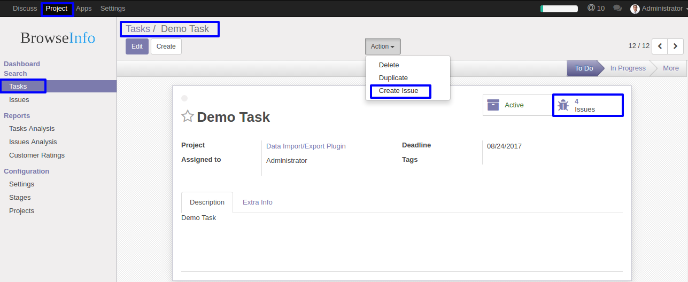
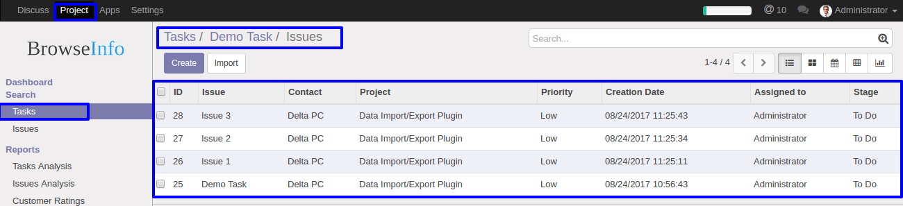
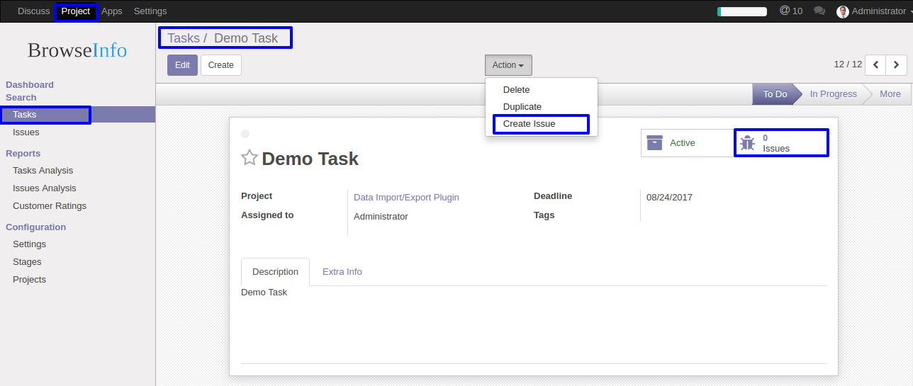
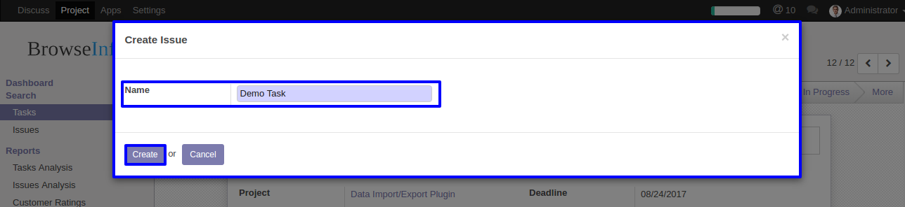
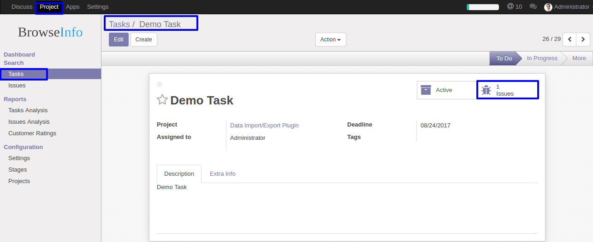
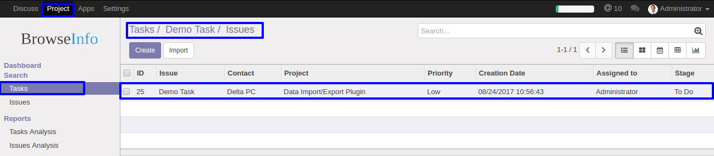
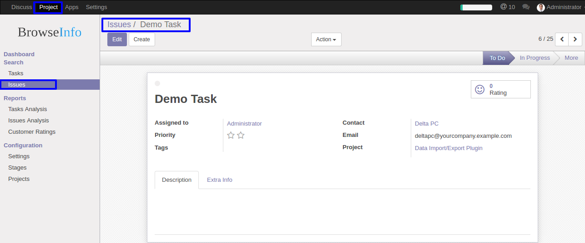

Key Features:
- This module helps you to create an issues from task.
Create an Issue From Task
Create an Issue From Task


How to use
Create Issues From Task.
After Installing this module, go to Project > Tasks. Here you can see Create Issue option in Action and you can also see the tab called 'Issues-0' which is highlighted by blue colour.

After clicking on create an issue option you will see a wizard ,
which is shown below in fig. ,click on create button to create an issue.

One issue is created in the task which is shown in below fig.

You can see the issues by clicking on Issues Button,
which is shown below.

The issue which is created above will be seen at 'Issues' , which is shown in below fig.

Free Support
You will get 90 Days free support incase any bugs or issue (Except data recovery).
At BrowseInfo we offer end to end solution for Odoo services. Which includes analysis & consultation on the workflows and integration part. Please note that You're not allowed to distribute this module after purchase! Incase of any question regarding this module feel free to email us on sales@browseinfo.in or raise a ticket on support.